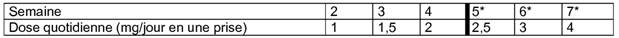

RÉSUMÉ DES CARACTÉRISTIQUES DU PRODUIT
ANSM - Mis à jour le : 18/03/2010
ROPINIROLE GLENMARK GENERICS 1 mg, comprimé pelliculé
2. COMPOSITION QUALITATIVE ET QUANTITATIVE
Chaque comprimé pelliculé contient du chlorhydrate de ropinirole correspondant à 1 mg de ropinirole.
Excipient : 72,11 mg de lactose (sous forme de lactose monohydraté et de lactose anhydre)
Pour la liste complète des excipients, voir rubrique 6.1.
Comprimé pelliculé.
Comprimé pelliculé, rond, vert pâle à vert, à bords biseautés, biconvexe, portant l'inscription « 255 » sur une face et « G » sur l'autre face.
4.1. Indications thérapeutiques
· Maladie de Parkinson dans les conditions suivantes :
o traitement de première intention en monothérapie pour différer la mise à la dopathérapie,
o association à la lévodopa en cours d'évolution de la maladie lorsque l'effet de la dopathérapie s'épuise ou devient inconstant, et qu'apparaissent des fluctuations de l'effet thérapeutique (fluctuations de type "fin de dose" ou effets "on-off").
· Traitement symptomatique du Syndrome des Jambes Sans Repos idiopathique modéré à sévère (voir rubrique 5.1).
4.2. Posologie et mode d'administration
Maladie de Parkinson
Adultes
La posologie doit être adaptée individuellement, en fonction de l'efficacité et de la tolérance.
ROPINIROLE GLENMARK GENERICS doit être administré en trois prises, de préférence au cours des repas pour améliorer la tolérance gastro-intestinale.
Début du traitement
La dose initiale de ropinirole recommandée est de 0,25 mg, 3 fois par jour pendant la première semaine. La dose de ropinirole est ensuite augmentée de 0,25 mg par prise, 3 fois par jour selon le schéma suivant :
|
|
Semaine |
|||
|
1 |
2 |
3 |
4 |
|
|
Dose de ropinirole par prise (mg) |
0,25 |
0,5 |
0,75 |
1 |
|
Dose de ropinirole quotidienne totale (mg) |
0,75 |
1,5 |
2,25 |
3 |
Poursuite du traitement
Après la phase d'instauration du traitement, la dose de ropinirole peut être augmentée chaque semaine de 0,5 à 1 mg par prise, 3 fois par jour (soit 1,5 à 3 mg/jour).
Une réponse thérapeutique peut être obtenue pour des doses de ropinirole allant de 3 à 9 mg/jour. Si les symptômes ne sont pas ou plus suffisamment contrôlés après la phase d'instauration décrite ci-dessus, la dose de ropinirole peut être progressivement augmentée jusqu'à 24 mg par jour.
Des doses quotidiennes de ropinirole supérieures à 24 mg n'ont pas été étudiées.
Si le traitement est interrompu pendant un jour ou plus, la reprise du traitement devra se faire selon le même schéma posologique (décrit plus haut).
Lorsque ROPINIROLE GLENMARK GENERICS est administré en association à la lévodopa, il est possible de réduire progressivement la dose de lévodopa en fonction de la réponse clinique. Dans les essais cliniques, la dose de lévodopa a été progressivement réduite d'environ 20 % chez les patients recevant du ropinirole en association. A un stade avancé de la maladie de Parkinson, chez les patients recevant du ropinirole en association à la lévodopa, des dyskinésies peuvent apparaître au cours de la phase d'instauration de traitement par le ropinirole. Les essais cliniques ont montré qu'une réduction de la dose de lévodopa peut améliorer les dyskinésies (voir rubrique 4.8).
Lorsque le ropinirole est utilisé en remplacement d'un autre agoniste dopaminergique, ce dernier doit être arrêté selon les recommandations qui s'y rattachent avant de commencer le traitement par le ropinirole.
Comme pour les autres agonistes dopaminergiques, s'il est nécessaire, l'arrêt du traitement par le ropinirole doit se faire progressivement en réduisant le nombre de prises quotidiennes sur une période d'une semaine.
Syndrome des jambes sans repos
Voie orale
Adultes
La posologie doit être adaptée individuellement, en fonction de l'efficacité et de la tolérance. Le ropinirole doit être administré au moment du coucher mais pas plus de 3 heures avant celui-ci. Le ropinirole peut être pris au cours du repas afin d'améliorer la tolérance gastro-intestinale.
Instauration du traitement (semaine 1) :
La dose initiale recommandée est de 0,25 mg, une fois par jour (comme indiqué ci-dessous) pendant deux jours. Si cette dose est bien tolérée, elle sera augmentée à 0,5 mg, une fois par jour jusqu'à la fin de la première semaine.
Poursuite du traitement (à partir de la semaine 2) :
Après la phase d'instauration du traitement, la dose quotidienne sera augmentée jusqu'à l'obtention d'une réponse thérapeutique optimale. Dans les essais cliniques, la dose moyenne utilisée, chez les patients ayant un Syndrome des Jambes Sans Repos modéré à sévère, a été de 2 mg une fois par jour.
La dose peut être augmentée jusqu'à 1 mg une fois par jour à la deuxième semaine. La dose peut ensuite être augmentée de 0,5 mg par semaine sur les deux semaines suivantes, jusqu'à atteindre une dose de 2 mg une fois par jour. Chez certains patients, pour obtenir une amélioration optimale, la dose pourra être augmentée progressivement jusqu'à 4 mg au maximum, en une prise par jour. Au cours des essais cliniques, la dose a été augmentée de 0,5 mg par semaine jusqu'à atteindre la dose de 3 mg une fois par jour, puis de 1 mg jusqu'à atteindre la dose maximale recommandée de 4 mg une fois par jour, comme le montre le tableau 1.
Des doses supérieures à 4 mg une fois par jour n'ont pas été étudiées chez les patients ayant un Syndrome des Jambes Sans Repos.
Tableau 1 : Schéma posologique

* Pour atteindre une amélioration optimale chez certains patients.
La réponse du patient au ropinirole devra être évaluée après 3 mois de traitement (voir rubrique 5.1). A la fin de cette période, la dose prescrite et la nécessité de continuer le traitement devront être réévaluées. Si le traitement est interrompu pendant plus de quelques jours, la reprise du traitement devra se faire selon le même schéma posologique décrit plus haut.
Enfants et adolescents
Le ropinirole n'est pas recommandé chez les enfants et adolescents de moins de 18 ans en raison de l'absence de données de sécurité d'emploi et d'efficacité.
Sujets âgés
Une diminution de la clairance du ropinirole est observée après 65 ans. Toute augmentation de dose sera plus progressive et adaptée en fonction de la réponse clinique.
Insuffisants rénaux
Chez les patients parkinsoniens ayant une insuffisance rénale légère à modérée (clairance de la créatinine comprise entre 30 et 50 ml/min), il n'est pas nécessaire d'adapter la posologie.
· Hypersensibilité au ropinirole ou à l'un des excipients.
· Insuffisance rénale sévère (clairance de la créatinine < 30 ml/min).
· Insuffisance hépatique.
4.4. Mises en garde spéciales et précautions d'emploi
En raison des propriétés pharmacodynamiques du ropinirole et du risque d'hypotension orthostatique, les patients présentant une affection cardio-vasculaire sévère (en particulier insuffisance coronarienne) doivent être traités avec précaution.
L'administration concomitante de ropinirole et d'antihypertenseurs ou d'anti-arythmiques n'a fait l'objet d'aucune étude. Comme avec les autres agents dopaminergiques, l'administration concomitante de ropinirole et de ces agents doit se faire avec prudence en raison d'un risque potentiel d'hypotension artérielle, de bradycardie ou d'autres troubles du rythme.
Le ropinirole ne devra pas être utilisé pour traiter l'akathisie, la tasikinésie (tendance compulsive à la marche induite par les neuroleptiques) ou un Syndrome des Jambes Sans Repos secondaire (par exemple : lié à une insuffisance rénale, à une anémie par carence martiale ou à une grossesse).
Une aggravation paradoxale des symptômes du Syndrome des Jambes Sans Repos : début plus précoce (augmentation) et réapparition des symptômes tôt le matin (rebond en début de matinée) peuvent être observés au cours du traitement par le ropinirole. Dans ce cas, le traitement devra être réévalué et une adaptation de la posologie ou un arrêt du traitement devront être envisagés.
Une somnolence et des accès de sommeil d'apparition soudaine ont été rapportés lors du traitement par ropinirole particulièrement chez les patients atteints de maladie de Parkinson (voir rubrique 4.8), ce phénomène est très rare chez les patients avec un Syndrome des Jambes Sans Repos. Cependant, les patients doivent être informés de la possibilité de survenue de ces effets et ils doivent être avertis d'être prudents lors de la conduite automobile ou l'utilisation des machines pendant le traitement avec ropinirole. Les patients ayant présenté une somnolence ou des accès de sommeil d'apparition soudaine ne doivent pas conduire de véhicules ou utiliser des machines. Une réduction des doses ou un arrêt du traitement peut être envisagé.
Les patients présentant des troubles psychiatriques ou psychotiques majeurs ou ayant des antécédents ne doivent être traités par des agonistes dopaminergiques que si les bénéfices escomptés sont supérieurs aux risques encourus.
Des troubles du contrôle des impulsions incluant le jeu pathologique et l'hypersexualité, et une augmentation de la libido, ont été décrits chez des patients traités par agonistes dopaminergiques, y compris le ropinirole, principalement chez des patients atteints de la maladie de Parkinson. Ces troubles ont été rapportés spécialement à doses élevées et étaient généralement réversibles lors de la diminution de la dose ou l'arrêt du traitement. Dans quelques cas, d'autres facteurs étaient présents tels que des antécédents de comportements compulsifs (voir rubrique 4.8).
Le ropinirole doit être administré avec précautions chez les patients présentant une insuffisance hépatique modérée. L'apparition d'effets indésirables doit être surveillée attentivement.
Ce médicament contient du lactose.
Les patients présentant des problèmes héréditaires rares d'intolérance au galactose, de déficit en lactase ou un syndrome de malabsorption du glucose et du galactose ne doivent pas prendre ce médicament.
4.5. Interactions avec d'autres médicaments et autres formes d'interactions
Les neuroleptiques et autres antagonistes dopaminergiques à action centrale, comme le sulpiride ou le métoclopramide, peuvent diminuer l'efficacité du ropinirole. Par conséquent, l'association du ropinirole à ces médicaments doit être évitée.
Il n'existe pas d'interaction pharmacocinétique entre le ropinirole et la lévodopa ou la dompéridone justifiant un ajustement de la posologie de l'un ou l'autre de ces médicaments.
Une augmentation des concentrations plasmatiques du ropinirole a été observée chez les patientes traitées par une hormonothérapie substitutive. Chez les patientes recevant déjà une hormonothérapie substitutive, le traitement par le ropinirole peut être commencé de façon habituelle. Toutefois, une adaptation de la posologie du ropinirole pourra être nécessaire, au regard de la clinique, en cas d'instauration ou d'arrêt d'une hormonothérapie substitutive.
Il n'existe pas d'information sur le potentiel d'interaction entre le ropinirole et l'alcool. Comme avec les autres médicaments agissant de manière centrale, les patients doivent être mis en garde en ce qui concerne la prise de ropinirole avec de l'alcool.
Le ropinirole est principalement métabolisé par l'isoenzyme CYP1A2 du cytochrome P450.
Dans une étude pharmacocinétique (menée chez des patients atteints de maladie de Parkinson avec du ropinirole à une posologie de 2 mg, 3 fois par jour) la ciprofloxacine a augmenté la Cmax et l'aire sous la courbe du ropinirole, respectivement de 60 et 84%, avec un risque potentiel d'effets indésirables. Ainsi, chez les patients recevant déjà du ropinirole, il peut être nécessaire d'ajuster la posologie du ropinirole quand des médicaments inhibiteurs du CYP1A2 (tels que la ciprofloxacine, l'énoxacine ou la fluvoxamine) sont introduits ou arrêtés.
Une étude d'interaction pharmacocinétique menée entre le ropinirole (à une posologie de 2 mg, 3 fois par jour) et la théophylline, un substrat du CYP1A2, n'a pas mis en évidence de modification de la pharmacocinétique du ropinirole ou de la théophylline. Par conséquent, il n'est pas attendu que le ropinirole interagisse avec les autres médicaments métabolisés par le cytochrome CYP1A2.
Les données in vitro ont montré qu'aux doses thérapeutiques, le ropinirole a un faible potentiel inhibiteur du cytochrome P450. Il est donc peu probable que le ropinirole altère la pharmacocinétique des autres médicaments par la voie du cytochrome P450.
Fumer provoque une induction du métabolisme de l'isoenzyme CYP1A2. Ainsi, lorsqu'un patient arrête ou commence à fumer pendant un traitement par ropinirole, une adaptation de la posologie peut être nécessaire.
Il n'existe pas d'interaction pharmacocinétique entre le ropinirole et la dompéridone (médicament antiémétique) justifiant un ajustement de la posologie de l'un ou l'autre de ces médicaments. Le dompéridone antagonise périphériquement les actions dopaminergiques du ropinirole et ne traverse pas la barrière hémato-encéphalique, d'où sa valeur en tant qu'agent antiémétique chez les patients traités par des agonistes dopaminergiques à action centrale.
Il n'y a pas de données sur l'utilisation du ropinirole chez la femme enceinte.
Les études chez l'animal ont montré une toxicité sur la reproduction (voir rubrique 5.3). Le risque potentiel dans l'espèce humaine étant inconnu, le ropinirole n'est pas recommandé pendant la grossesse à moins que le bénéfice attendu pour la patiente l'emporte sur le risque potentiel encouru par le fœtus.
Le ropinirole ne doit pas être utilisé chez les femmes qui allaitent car il peut inhiber la lactation.
4.7. Effets sur l'aptitude à conduire des véhicules et à utiliser des machines
|
Les patients traités par ropinirole présentant une somnolence et/ou des accès de sommeil d'apparition soudaine, doivent être informés qu'ils ne doivent pas conduire de véhicules ni exercer une activité où une altération de leur vigilance pourrait les exposer eux-mêmes ou d'autres personnes à un risque d'accident grave ou de décès (par exemple l'utilisation de machines), jusqu'à la disparition de ces effets (voir rubrique 4.4). |
Les effets indésirables qui ont été rapportés sont classés ci-dessous par système organe et par fréquence. Il est précisé si ces effets indésirables, ont été rapportés dans les essais cliniques en cas de monothérapie ou en association à la lévodopa.
Les fréquences sont définies selon la convention suivante : très fréquents (≥ 1/10), fréquents (≥ 1/100, < 1/10), peu fréquents (≥ 1/1000, < 1/100), rares (≥ 1/10000, < 1/1000), très rares (< 1/10000), inconnus (ne pouvant pas être estimée à partir des données disponibles).
Au sein de chaque groupe de fréquence, les effets indésirables sont présentés par ordre décroissant de gravité.
Utilisation du ropinirole dans la maladie de Parkinson
A noter qu'il est précisé si ces effets indésirables ont été rapportés dans les études cliniques en monothérapie ou en association avec la levodopa.
Troubles du système immunitaire
Inconnu: réactions d'hypersensibilité (incluant urticaire, angioedème, éruption cutanée, prurit).
Troubles psychiatriques
Fréquent: hallucinations.
Peu fréquent: réactions psychotiques (autres que des hallucinations) incluant délires, illusions, paranoïa.
Chez des patients avec une maladie de Parkinson traités par agonistes dopaminergiques y compris le ropinirole, principalement à doses élevées, des troubles du contrôle des impulsions (incluant jeu pathologique et l'hypersexualité) et une augmentation de la libido ont été rapportés. Ces cas étaient généralement réversibles lors de la diminution de la dose ou de l'arrêt du traitement.
Utilisation en association à la lévodopa
Fréquent: confusion.
Troubles du système nerveux
Très fréquent: somnolence.
Fréquent: étourdissements (y compris vertiges).
Peu fréquent: accès de sommeil d'apparition soudaine, somnolence diurne excessive. Somnolence pouvant être associée peu fréquemment avec une somnolence diurne excessive et des accès de sommeil d'apparition soudaine.
Utilisation en monothérapie
Très fréquent: syncope.
Utilisation en association à la lévodopa
Très fréquent: dyskinésie.
A un stade avancé de la maladie de Parkinson, des dyskinésies peuvent apparaître lors de la phase d'instauration de traitement par le ropinirole. Les essais cliniques ont montré qu'une réduction de la dose de lévodopa peut améliorer les dyskinésies (voir rubrique 4.2).
Troubles vasculaires
Peu fréquent: hypotension orthostatique, hypotension, rarement sévères.
Troubles gastro-intestinaux
Très fréquent: nausées.
Fréquent: pyrosis.
Utilisation en monothérapie
Fréquent: vomissements, douleurs abdominales.
Troubles hépato-biliaires
Inconnu: réactions hépatiques, principalement une élévation des enzymes hépatiques.
Troubles généraux
Utilisation en monothérapie
Fréquent: œdème des membres inférieurs.
Utilisation du ropinirole dans le Syndrome des Jambes Sans Repos
Au cours des essais cliniques chez les patients ayant un Syndrome des Jambes Sans Repos, les effets indésirables les plus fréquemment observés ont été des nausées (environ 30 % des patients). En général, les effets indésirables ont été d'intensité légère à modérée et sont survenus en début de traitement ou lors de l'augmentation de la posologie. Peu de patients sont sortis d'essai en raison d'effets indésirables.
Le tableau 2 ci-dessous présente les effets indésirables rapportés à une fréquence supérieure ou égale à 1% par rapport à celle du placebo lors des essais cliniques sur 12 semaines chez les patients traités par ropinirole, ou ceux rapportés de manière peu fréquente mais connus pour être associés au ropinirole.
Tableau 2: Effets indésirables rapportés lors des essais cliniques sur 12 semaines chez les patients ayant un Syndrome des Jambes Sans Repos (ropinirole: n = 309; placebo: n = 307)
|
Troubles psychiatriques |
|
|
· Fréquents · Peu fréquents |
Nervosité |
|
|
Confusion |
|
Troubles du système nerveux |
|
|
· Fréquents |
Syncope, somnolence, étourdissements (y compris vertiges) |
|
Troubles vasculaires |
|
|
· Peu fréquents |
Hypotension orthostatique, hypotension |
|
Troubles gastro-intestinaux |
|
|
· Très fréquents · Fréquents |
Vomissements, nausées |
|
|
Douleurs abdominales |
|
Troubles généraux |
|
|
· Fréquents |
Fatigue |
Des hallucinations ont été peu fréquemment rapportées dans les études cliniques à long terme en ouvert.
Une aggravation paradoxale des symptômes du Syndrome des Jambes Sans Repos : début plus précoce (augmentation) et réapparition des symptômes tôt le matin (rebond en début de matinée) peuvent être observés lors du traitement par ropinirole.
Prise en charge des effets indésirables
Une réduction de la posologie devra être envisagée en cas de survenue d'effets indésirables significatifs. Après amélioration de l'effet indésirable, la posologie pourra être ré-augmentée progressivement. Des médicaments anti-nauséeux qui ne sont pas des antagonistes dopaminergiques d'action centrale, tels que la dompéridone, peuvent être utilisés, si nécessaire.
Données post-marketing
Réactions d'hypersensibilité (incluant urticaire, angioedème, éruption cutanée, prurit)
Des réactions psychotiques (autres que des hallucinations) incluant délires, illusions, paranoïa ont été rapportées.
Chez des patients avec une maladie de Parkinson traités par agonistes dopaminergiques y compris le ropinirole, principalement à doses élevées, des troubles du contrôle des impulsions incluant jeu pathologique, hypersexualité) et augmentation de la libido ont été rapportés. Ces cas étaient généralement réversibles lors de la diminution de la dose ou de l'arrêt du traitement.
Chez les patients atteints de maladie de Parkinson, le ropinirole est associé peu fréquemment (> 1/1000, < 1/100) à une somnolence diurne excessive et accès de sommeil d'apparition soudaine. Dans le Syndrome des Jambes Sans Repos, ce phénomène est rare (< 1/10000).
Le traitement par ropinirole est associé peu fréquemment (> 1/1000, < 1/100) à une hypotension orthostatique ou une hypotension, rarement sévère.
De très rares cas (< 1/10000) des réactions hépatiques, principalement une élévation des enzymes hépatiques, ont été rapportés.
Les symptômes d'un surdosage en ropinirole sont liés à son activité dopaminergique. Ces symptômes, qui peuvent être atténués par un traitement approprié par des antagonistes dopaminergiques, tels que les neuroleptiques ou le métoclopramide.
5. PROPRIETES PHARMACOLOGIQUES
5.1. Propriétés pharmacodynamiques
Classe pharmacothérapeutique: AGONISTE DOPAMINERGIQUE, Code ATC: N04BC04.
Mécanisme d'action
Le ropinirole est un agoniste dopaminergique non ergoté D2/D3 qui stimule les récepteurs dopaminergiques du striatum.
Maladie de Parkinson
Le ropinirole pallie la déplétion en dopamine qui caractérise la maladie de Parkinson par stimulation des récepteurs striataux dopaminergiques.
Le ropinirole inhibe la sécrétion de prolactine par action au niveau de l'hypothalamus et de l'hypophyse.
Syndrome des Jambes sans Repos
ROPINIROLE GLENMARK GENERICS doit être seulement prescrit aux patients présentant un Syndrome des Jambes Sans Repos idiopathique modéré à sévère. Les patients ayant un Syndrome des Jambes Sans Repos idiopathique modéré à sévère se plaignent généralement d'insomnie ou de gêne sévère au niveau des membres.
Dans quatre études randomisées sur 12 semaines évaluant le ropinirole versus placebo chez des patients présentant un Syndrome des Jambes Sans Repos, les effets sur les scores de l'échelle IRLS (International Restless Syndrome Scale) ont été comparés à la 12ème semaine par rapport à l'état initial. La dose moyenne de ropinirole chez les patients modérés à sévères était de 2,0 mg/jour. Dans une analyse regroupée de ces quatre études chez les patients présentant un Syndrome des Jambes Sans Repos modéré à sévère, la différence ajustée entre les deux groupes de traitement pour le score de l'échelle IRLS, à la semaine 12, en analyse LOCF (Last Observation Carried Forward) dans la population en intention de traiter a été, entre l'état initial et la semaine 12, de -4,0 points (IC 95 % [-5,6 ; -2,4], p<0,0001). Chez ces patients, le score moyen d'IRLS est passé de 28,4 à 13,5 dans le groupe ropinirole et de 28,2 à 17,4 dans le groupe placebo.
Une étude de polysomnographie sur 12 semaines, contrôlée contre placebo, chez des patients ayant un Syndrome des Jambes Sans Repos, a évalué l'effet du traitement par le ropinirole sur les mouvements périodiques des jambes durant le sommeil. Des différences statistiquement significatives ont été observées entre l'état initial et la semaine 12 pour l'indice des mouvements périodiques des jambes durant le sommeil.
Il n'existe pas de données suffisantes pour démontrer l'efficacité à long terme du ropinirole dans le Syndrome des Jambes Sans Repos (voir rubrique 4.2). Cependant dans une étude sur 36 semaines, les patients ayant continué le ropinirole ont présenté un taux significativement plus bas de rechute par rapport à ceux sous placebo (33 % versus 58 %, p= 0,0156).
L'analyse regroupée des données des quatre études randomisées sur 12 semaines évaluant le ropinirole versus placebo chez des patients présentant un Syndrome des Jambes Sans Repos modéré à sévère, a montré que les patients traités par ropinirole ont présenté une amélioration significative par rapport au placebo sur les domaines de l'échelle MOS Sleep (Medical Outcome Study Sleep) (Scores de 0 à 100 pour chaque domaine excepté pour la quantité de sommeil). Les différences ajustées entre les bras ropinirole et placebo ont été : de -15,2 (IC95 % [-19,37 ; -10,94] ; p<0,0001) pour les troubles du sommeil, de 0,7 heure (IC95 % [0,49 ; 0,94] ; p<0,0001) pour la quantité de sommeil, de 18,6 (IC95 % [13,77 ; 23,45] ; p<0,0001) pour la qualité du sommeil et de -7,45 (IC95 % [-10,86 ; -4,23] ; p<0,0001) pour la somnolence diurne.
Un phénomène de rebond suivant l'interruption du traitement par ropinirole ne peut pas être exclut (rebond de fin de traitement). Au cours des essais cliniques, bien que le score moyen total de l'IRLS, 7 à 10 jours après arrêt de traitement ait été plus élevé chez les patients traités par ropinirole comparativement aux patients sous placebo, la sévérité des symptômes à l'arrêt du traitement n'a généralement pas été supérieure à celle observée lors de leur état initial.
Dans les études cliniques, la plupart des patients étaient d'origine caucasienne.
Etude de l'effet du ropinirole sur la repolarisation cardiaque.
Une étude approfondie conduite chez des volontaires sains, hommes et femmes, recevant les doses 0,5 mg, 1 mg, 2 mg et 4 mg de ropinirole comprimé pelliculé (à libération immédiate) une fois par jour a montré, par rapport au placebo, une augmentation maximum de la durée de l'intervalle QT de 3,46 millisecondes (meilleur estimateur de la vraie différence) à la dose de 1 mg. La limite supérieure de l'intervalle de confiance à 95% pour le plus grand effet moyen était inférieure à 7,5 millisecondes. L'effet du ropinirole à des doses plus élevées n'a pas été systématiquement évalué.
Les données cliniques disponibles issues de l'étude sur l'intervalle QT ne permettent pas d'indiquer un risque de prolongation de l'intervalle QT pour des doses de ropinirole supérieures à 4 mg/jour. Un risque de prolongation de l'intervalle QT ne peut pas être exclu car une étude jusqu'aux doses de 24 mg/jour n'a pas été menée.
5.2. Propriétés pharmacocinétiques
Absorption
La biodisponibilité du ropinirole est d'environ 50 % (36 % à 57 %). L'absorption orale du ropinirole comprimé pelliculé (à libération immédiate) est rapide avec une Cmax obtenue en moyenne 1,5 heures après la prise. Un repas riche en graisse diminue l'absorption de ropinirole, comme l'indique le retard du Tmax moyen de 2,6 heures et la diminution moyenne de 25% de la Cmax.
Distribution
La fixation du ropinirole aux protéines plasmatiques est faible (10 - 40%).
En raison de sa forte lipophilie, le volume de distribution du ropinirole est important (approximativement 7 l/kg).
Métabolisme
Le ropinirole est principalement métabolisé par l'enzyme CYP1A2 du cytochrome P450 et ses métabolites sont essentiellement éliminés par voie urinaire. Le métabolite principal est au moins 100 fois moins puissant que le ropinirole dans les modèles animaux explorant la fonction dopaminergique.
Elimination
La demi-vie d'élimination moyenne du ropinirole de la circulation systémique est d'environ 6 heures. L'exposition systémique au ropinirole (Cmax et Aire Sous la Courbe) est approximativement proportionnelle avec la dose dans la fourchette thérapeutique. Aucun changement dans la clairance du ropinirole n'est observé après une administration orale unique ou répétée. Une large variabilité inter-individuelle des paramètres pharmacocinétiques a été observée.
Linéarité
La pharmacocinétique du ropinirole est globalement linéaire (Cmax et AUC) dans l'intervalle thérapeutique entre 0,25 mg et 4 mg après dose unique et doses répétées.
Caractéristiques liées à la population
Chez les patients âgés de plus de 65 ans, une diminution d'environ 30 % de la clairance systémique du ropinirole est possible.
Chez les patients présentant une insuffisance rénale légère à modérée (clairance de la créatinine comprise entre 30 et 50 ml/min), aucun changement de la pharmacocinétique du ropinirole n'est observé. Aucune donnée n'est disponible chez le patient présentant une insuffisance rénale sévère.
5.3. Données de sécurité préclinique
Le profil toxicologique est principalement déterminé par son activité pharmacologique: changements de comportement, hypo-prolactinémie, diminution de la pression sanguine et du rythme cardiaque, ptosis et salivation. Dans une étude à long terme chez le rat albinos à forte dose (50 mg/kg), des dégénérescences rétiniennes, probablement liées à une augmentation de l'exposition à la lumière, ont été observées et uniquement dans cette espèce.
Génotoxicité
Aucune génotoxicité n'a été observée lors de la série habituelle de tests in vitro et in vivo.
Cancérogénicité
Des études conduites durant deux ans chez la souris et le rat à des doses supérieures à 50 mg/kg n'ont pas mis en évidence d'effet carcinogène chez la souris. Chez le rat, les seuls effets reliés au produit étaient une hyperplasie des cellules de Leydig et des adénomes testiculaires dus à l'effet hypo-prolactinémiant du ropinirole.
Ces lésions ont été considérées comme un phénomène spécifique d'espèce et ne constituent pas un risque pour l'utilisation clinique du ropinirole.
Toxicité sur la reproduction
L'administration de ropinirole chez la rate gravide à des doses toxiques a montré une diminution du poids fœtal à la dose de 60 mg/kg (approximativement 15 fois l'AUC à la dose maximale chez l'Homme), une augmentation de la mort fœtale à la dose de 90 mg/kg (approximativement 25 fois l'AUC à la dose maximale chez l'Homme) et des malformations digitales à la dose de 150 mg/kg (approximativement 40 fois l'AUC à la dose maximale chez l'Homme). Il n'a pas été mis en évidence d'effet tératogène chez le rat à la dose de 120 mg/kg (approximativement 30 fois l'AUC à la dose maximale chez l'Homme) et aucun indice ne laisse supposer un effet sur le développement chez le lapin.
Lactose anhydre, lactose monohydraté, cellulose microcristalline, acide citrique anhydre, croscarmellose sodique, stéarate de magnésium.
Pelliculage:
Hypromellose, dioxyde de titane (E171), macrogol 400, talc, oxyde de fer jaune (E172), laque d'aluminium carmin d'indigo (E132), oxyde de fer noir (E172)
Sans objet.
2 ans.
6.4. Précautions particulières de conservation
A conserver à une température ne dépassant pas 30°C.
Plaquette thermoformée:
A conserver dans l'emballage d'origine, à l'abri de l'humidité.
Flacon:
Conserver le flacon soigneusement fermé, à l'abri de l'humidité.
6.5. Nature et contenu de l'emballage extérieur
21 et 84 sous plaquettes thermoformées (PVC/PE/Aclar/Aluminium) ou (Aluminium/Aluminium)
Flacon blanc opaque PEHD de 84 comprimés, avec fermeture sécurisée en polypropylène résistant aux enfants.
Toutes les présentations peuvent ne pas être commercialisées.
6.6. Précautions particulières d’élimination et de manipulation
Tout produit non utilisé ou déchet doit être éliminé conformément à la réglementation en vigueur.
7. TITULAIRE DE L’AUTORISATION DE MISE SUR LE MARCHE
GLENMARK GENERICS (EUROPE) LIMITED
LAXMI HOUSE, 2 B DRAYCOTT AVENUE
MIDDLESEX
HA3 OBU KENTON
ROYAUME-UNI
8. NUMERO(S) D’AUTORISATION DE MISE SUR LE MARCHE
· 353 653-4 ou 34009 353 653 4 7: 21 comprimés sous plaquettes thermoformées (PVC/PE/ACLAR/ Aluminium).
· 353 655-7 ou 34009 353 655 7 6: 84 comprimés sous plaquettes thermoformées (PVC/PE/ACLAR/ Aluminium).
· 353 852-7 ou 34009 353 852 7 7: 21 comprimés sous plaquettes thermoformées (Aluminium/Aluminium).
· 353 853-3 ou 34009 353 853 3 8: 84 comprimés sous plaquettes thermoformées (Aluminium/Aluminium).
· 353 855-6 ou 34009 353 855 6 7: Flacon (PEHD) de 84 comprimés.
9. DATE DE PREMIERE AUTORISATION/DE RENOUVELLEMENT DE L’AUTORISATION
[à compléter par le titulaire]
10. DATE DE MISE A JOUR DU TEXTE
[à compléter par le titulaire]
Sans objet.
12. INSTRUCTIONS POUR LA PREPARATION DES RADIOPHARMACEUTIQUES
Sans objet.
Liste I.